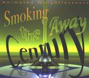

| Artist: | Smoking The Century Away |
| Title: | Animated Weightlessness |
| Label: | Nuggetphase Records catnr unknown |
| Length(s): | 42 minutes |
| Year(s) of release: | 2001 |
| Month of review: | [03/2002] |
| 1) | Even More Glueland | 20.30 |
| 2) | Denizen | 5.00 |
| 3) | Nephrite | 1.03 |
| 4) | Smoked Psalm | 1.51 |
| 5) | Zoot Rescue | 1.39 |
| 6) | Alice Of Glazer | 9.53 |
| 7) | Melting Into Morning Cellophane | 0.44 |
Even More Glueland starts off rather sharply with some lesley electronics, which feature during the full track. Aside from that comes a slowly throbbing bass, often in the background, but sometimes taking control. After several minutes the abrasiveness goes down a bit, opening up to some lighter experiments, which turns out to be only a temporary reprieve. Later in the track percussion session strongly reminiscent of tapping is issued.
Denizen seems to have a strong hiss over it. I can't say whether this is intentional or not. The track seems to be based on one idea more than the previous one. It is more consistent, and musical shifts are more gradual, without threatening to become minimal. Towards the end the track features a church organ (from a box), giving a more soft sound, even though they manage too even make this sound rather sharp.
Nephrite sounds like an alarm buzzer in a nuclear plant, or some such. Although I guess those would not normally be accompanied by guitar twanging or bass thumping.
So this is what a Smoked Psalm sounds like? Interesting. The hum as well as the church organ (boxed, as before) seem to justify a psalm association, being it only barely. But then again...
With a hissing Zoot Rescue strikes us, although we can hardly call ourselves unaware now. The neurotic bass and off key violin seem to keep the electronics under on this one. Once more quite interesting.
Alice Of Glazer seems to start in a zoo, although I'm not sure of its exact kind. After recaging the animals, the guitar is brought out, only to return to the theme from Denizen.
Melting Into Morning Cellophane features some honky keyboarding, with several boxed wind instruments, guided by a neurotic drum rhythm.